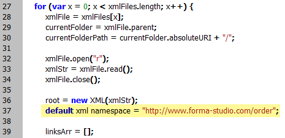

Process XML Data for InDesign
This script uses XML files as a sort of database for creating InDesign files from templates.
for (var x = 0; x < xmlFiles.length; x++) {
xmlFile = xmlFiles[x];
currentFolder = xmlFile.parent;
currentFolderPath = currentFolder.absoluteURI + "/";
xmlFile.open("r");
xmlStr = xmlFile.read();
xmlFile.close();
root = new XML(xmlStr);
default xml namespace = "http://www.forma-studio.com/order";
linksArr = [];
copyCount = root.xpath("/order/copy-count");
componentList = root.xpath("/order/product/components/component");
componentsLength = componentList.length();
for (var c = 0; c < componentsLength; c++) {
component = componentList[c];
linksArr.push({ name : component.images.image.file_name.toString(),
width : parseInt(component.images.image.size.width),
height : parseInt(component.images.image.size.height),
resolution : parseInt(component.images.image.resolution),
});
}
montageList = root.xpath("/order/product/montages/montage");
montagesLength = montageList.length();
for (var i = 0; i < montagesLength; i++) {
montage = montageList[i];
app.scriptPreferences.userInteractionLevel = UserInteractionLevels.neverInteract;
app.open(new File(montage.layout_filename));
doc = app.activeDocument;
docFile = new File(outFolderPath + montage.result_filename + ".indd");
doc.save(docFile);
app.scriptPreferences.userInteractionLevel = UserInteractionLevels.interactWithAll;
targetPagesLength = parseInt(montage.page_count)*copyCount;
if (!isNaN(targetPagesLength)) {
if( targetPagesLength != 0) {
while (doc.pages.length > targetPagesLength) {
doc.pages.lastItem().remove();
}
}
}
UpdateAllOutdatedLinks(doc);
noErrors = ProcessDoc(doc, linksArr, currentFolderPath);
if (noErrors) {
destinationFolder = new Folder(montage.destination);
VerifyFolder(destinationFolder);
pdfPath = montage.destination + "/" + montage.result_filename + ".pdf"
pdfFile = new File(pdfPath);
backgroundTask = doc.asynchronousExportFile(ExportFormat.PDF_TYPE, pdfFile, false, "[High Quality Print]");
var tasksPanel = app.panels.itemByName("Background Tasks");
if (tasksPanel) tasksPanel.visible = true;
successfulDocs.push(doc.name);
if (xmlFile.name == "sforder.xml") xmlFile.rename("NoErrorProcecced_" + xmlFile.name);
}
else {
failedDocs.push(doc.name);
if (xmlFile.name == "sforder.xml") xmlFile.rename("ErrorProcecced_" + xmlFile.name);
}
} // for montagesLength
} // for xmlFiles
Here is how to set the default namespace:

Click here to download the whole script.